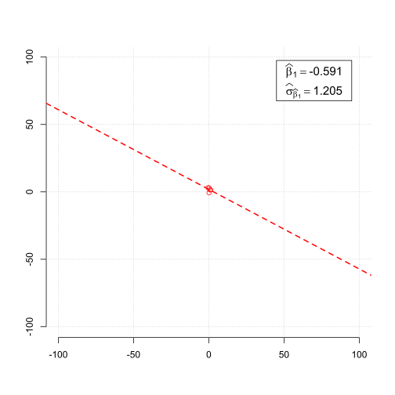
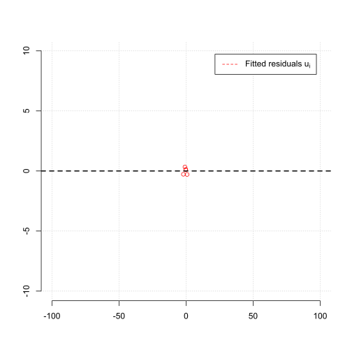
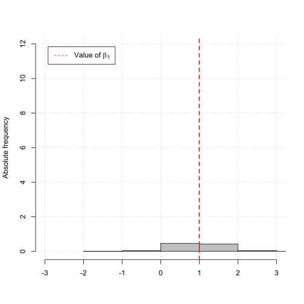
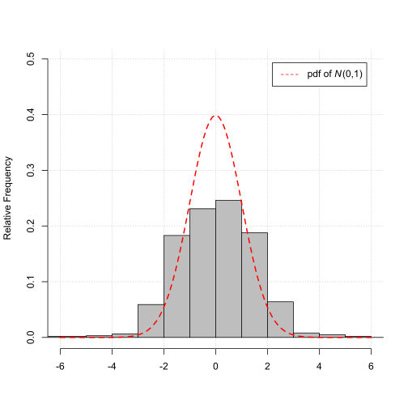

Econometrics and Statistics (520K)
Econometrics and Statistics (520K)
Properties of the OLS Estimator
(Effect of heteroskedasticity)
Motivation
Understand the effect of heteroskedasticity on the sampling distribution of the OLS estimator for the slope coefficient of a simple linear regression model.
Statistical Model
Consider the simple linear regression model,
$$ \begin{align} Y_i = \beta_{0} + \beta_{1} X_{i} + u_{i}, \end{align} $$where \(\beta_{0}\) is the intercept and \(\beta_{1}\) is the slope parameter.
Furtermore, supppse \(X_{i}\) and \(u_{i}\) are independently normally distributed, i.e.,
$$ \begin{align} X_{i} \sim N\left(0, \sigma_{X}^{2}\right), \;\;\;\;\; u_{i} \sim N\left(0, \sigma_{ui}^{2}\right), \end{align} $$where \(\sigma_{X}^{2}\) and \(\sigma_{ui}^{2}\) is the variance of \(X_{i}\) and \(u_{i}\), respectively.
Furthermore, suppose \(\sigma_{u,t}^{2}\) is not constant but a function of \(X_{i}\), i.e.,
$$ \begin{align} \sigma_{ui}^{2} = \text{exp}\left(\gamma_{0} + \gamma_{1} X_{i}\right). \end{align} $$Thus, for positive/negative values of \(\gamma_{1}\) the variance of \(u_{i}\) is positively/negatively related with the value of \(X_{i}\).
Estimator and Parameter of Interest
We are interested in the sampling properties of the OLS estimator \(\widehat{\beta}_{1}\) given by,
$$ \begin{align} \widehat{\beta}_{1} = \frac{\sum_{i=1}^{n}\left(X_{i} - \overline{X}\right)\left(Y_{i} - \overline{Y}\right)}{\sum_{i=1}^{n}\left(X_{i} - \overline{X}\right)^{2}}, \end{align} $$ as estimator for the slope parameter \(\beta_{1}\) of the regression model above.Illustration
Change the sample size \(N\) and see the effect on the properties of the OLS estimator \(\widehat{\beta}\) as estimator for the slope coefficient \(\beta\).
Parameters
Sample size \(n\)
Variance of \(X_{i}\)
Variance of \(u_{i}\)
heteroskedasticity \(g_1\)
Scatterplot (observations)
The plot below illustrates the simulation exercise
Scatterplot (fitted residuals)
The plot below illustrates the fitted residuals
Histogram of the sample average \(\overline{Y}\)
The plot below illustrates the Law of Large Numbers (LLN)
As the sample size \(N\) grows the OLS estimator \(\widehat{\beta}_{1}\) gets closer to \(\beta\), i.e.,
$$ \begin{align} \widehat{\beta}_{1} \overset{p}{\to} \beta. \end{align} $$Histogram of the standardized sample average \(z_{\overline{Y}}\)
(The plot below illustrates the Central Limit Theorem (CLT))
As the sample size \(N\) grows the distribution of the standardized sample average,
$$ \begin{align} z_{\overline{Y}} &= \frac{\overline{Y} - \beta}{\sigma_{\widehat{\beta}_{1}}}, \end{align} $$gets closer to the standard normal distribution \(N\left(0, 1\right)\).
More Details
For the construction of the standardized OLS estimator \(z_{\widehat{\beta}_{1}}\), the variance of \(\widehat{\beta}_{1}\), i.e., \(\sigma_{\widehat{\beta}_{1}}^{2}\), has to be estimated.
The variance of \(\widehat{\beta}_1\), i.e., \(\sigma_{\widehat{\beta}_{1}}^{2}\), can be robustly estimated by,
$$ \begin{align} \widehat{\sigma}_{\widehat{\beta}_{1}}^{2} = \frac{1}{n} \times \frac{\frac{1}{n-2}\sum_{i=1}^{n}\left(X_{i} - \overline{X}\right)^{2}\widehat{u}_{i}^{2}}{\left[\frac{1}{n}\sum_{i=1}^{n}\left(X_{i} - \overline{X}\right)^{2}\right]^{2}}, \end{align} $$where \(\widehat{u}_{i}\) are the residuals of the estimate regression line.
Note, the estimator for \(\sigma_{\widehat{\beta}_{1}}^{2}\) above is robust w.r.t. to heteroskedasticity, i.e., it does not rely on the assumption of homoskedasticity.
Instead, some statistic software report estimates \(\sigma_{\widehat{\beta}_{1}}^{2}\), based on the assumption of homoskedasticity.
The so called homoskedaticity-only estimator of \(\sigma_{\widehat{\beta}_{1}}^{2}\), is given by,
$$ \begin{align} \widetilde{\sigma}_{\widehat{\beta}_{1}}^{2} = \frac{\frac{1}{n-2}\sum_{i=1}^{n}\widehat{u}_{i}^{2}}{\sum_{i=1}^{n}\left(X_{i} - \overline{X}\right)^{2}}. \end{align} $$Remember, due to the different outcomes of the samples the OLS estimates will vary across sample draws.